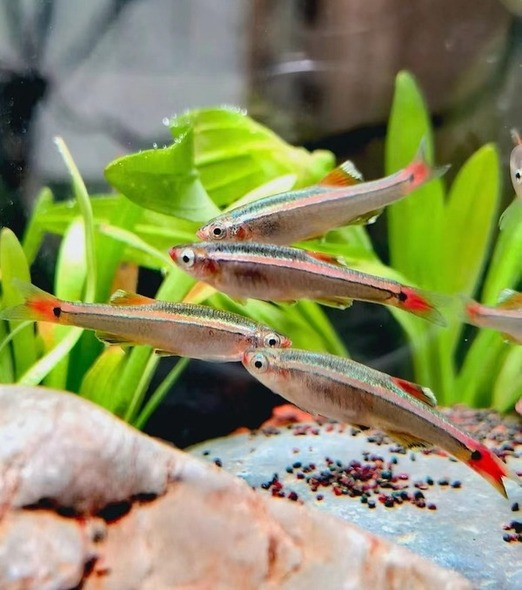

Freshwater Fish > Coldwater Fish > White Cloud Mountain Minnow
White Cloud Mountain Minnow

| Basic Profile | |
|---|---|
| Family | Cyprinidae |
| Origin | White Cloud Mountains of China |
| Physical Characteristics | White Cloud Mountain Minnows have an upward-slanting mouth with a slightly protruding lower jaw. They lack barbels, and their dorsal fin is located beyond the mid-line of the body, aligning with the anal fin. Their body is a shimmering bronze-brown color, accented by a fluorescent line that runs from the eye to the tail. |
| Full-grown Size | 1.5 inches |
| Life Span | 3 to 5 years |
| Diet | Omnivore |
| Tank Level | Top and middle dwellers |
| Compatibility | |
|---|---|
| Aggressive level | Tank Mates |
 |

|
| Peaceful and Sociable | Neon Tetra |
| Fish Demands | |
|---|---|
| Water Temperature | 60 F to 72 F (15 C - 22 C) |
| Water Hardness | 5 dGH to 19 dGH |
| pH Preferences | pH 6.0 to pH 8.0 |
| Minimum Tank Size | 10 gallons |
| Feeding | White Cloud Mountain Minnows feed on live food such as mosquito larvae, daphnia, and brine shrimp, as well as frozen and flake food. |
Estimated Price (RM): 2-4 per White Cloud Mountain Minnow
Tip:
It is recommended to keep White Cloud Mountain Minnows in good-sized schools, preferably of a half dozen or more.